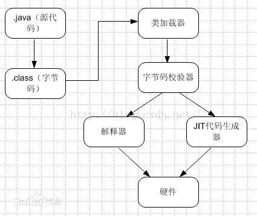

[toc]
1. java 历程
- java8:增加lambda,流
- java9:增加module系统(要用什么先声明)
- java10: 引入var,局部变量类型判断,不能用于方法上的参数
- java11: 允许在lambda中使用var,增加了ZGC,(长期支持版本)
- java12: swtch增加,可以写表达式,可以(用break)写返回值
- java13: swtch改变,用yield 返参,break不返,可以使用"““code”“““包含代码块(和py一样)
2. 网站如何提高并发量?
答:无法容纳高访问,是因为无法快速处理请求,大量请求被堆积,导致服务器崩溃.
目前最耗时的是对数据库的访问,所有优化sql是必要的.
还可以用各种缓存(Redis),各种服务器(CDN,文件服务器),各种分布式操作,加快对请求的处理
3. 对象深拷贝与浅拷贝的区别
浅拷贝(影子克隆):只复制对象的基本类型,而对象类型仍属于原来的引用.
深拷贝(深度克隆):不仅复制对象的基本类型,同时也复制原对象中的对象.就是说完全是新对象产生的
4. multipart/form-data 与 application/x-www-form-urlencoded
x-www-form-urlencoded
传递数据是文本格式,form表单提交 默认就是这种格式
form-data
一般用于图片,视频等数据,传递数据使用二进制流传递,所以后台是不能接收到值的,所以需要用方面的类来处理,在jfw-front中,引入了文件上传的包,spring就自动解析了,所以jfw-front这两种格式都支持,当然也可以用特定方式来取form-data格式的值
<!-- 上传文件拦截，设置最大上传文件大小 10M=10*1024*1024(B)=10485760 bytes -->
<bean id="multipartResolver" class="org.springframework.web.multipart.commons.CommonsMultipartResolver">
<property name="maxUploadSize" value="10485760" />
</bean>
<dependency>
<groupId>org.springframework</groupId>
<artifactId>spring-web</artifactId>
<version>3.1.0.RELEASE</version>
</dependency>
这些格式是用于 http请求或者响应, 用于指明数据的格式, 称为 内容类型 (Content-Type)
Content-Type 详解_leoss.H的博客-CSDN博客_content-type
5. jwt
JSON Web Token（缩写 JWT）是目前最流行的跨域认证解决方案
JWT 的原理是，服务器认证以后，生成一个 JSON 对象(唯一标识(用户id),到期时间,其他信息等)，发回给用户.
以后，用户与服务端通信的时候，都要发回这个 JSON 对象。服务器完全只靠这个对象认定用户身份。为了防止用户篡改数据，服务器在生成这个对象的时候，会加上签名（详见后文）。
服务器就不保存任何 session 数据了，也就是说，服务器变成无状态了，从而比较容易实现扩展。
来自 <http://www.ruanyifeng.com/blog/2018/07/json_web_token-tutorial.html>
个人理解: 你登录完后,服务把需要的信息发送给你,以后你访问就带这个信息,我既能验证,又能获得信息(B门户中的组织树信息),用户数据都存在了客户端,服务端就不用存在,以后增加服务器也不用担心验证问题
实际的 JWT 大概就像下面这样。
dfesrhsrhtrsh.
gaheiugvweiugnaqoweigqowe4e4waqegq.
weughgbwggiqgwgru
它是一个很长的字符串，中间用点（.）分隔成三个部分。注意，JWT 内部是没有换行的，这里只是为了便于展示，将它写成了几行。
来自 <http://www.ruanyifeng.com/blog/2018/07/json_web_token-tutorial.html>
JWT 的三个部分依次如下。
- Header（头部）
- Payload（负载）
- Signature（签名）
来自 <http://www.ruanyifeng.com/blog/2018/07/json_web_token-tutorial.html>
- Header 部分是一个 JSON 对象，描述 JWT 的元数据，通常是下面的样子。
{
"alg": "HS256",
"typ": "JWT"
}
上面代码中，alg属性表示签名的算法（algorithm），默认是 HMAC SHA256（写成 HS256）；typ属性表示这个令牌（token）的类型（type），JWT 令牌统一写为JWT。
最后，将上面的 JSON 对象使用 Base64URL 算法（详见后文）转成字符串。
来自 <http://www.ruanyifeng.com/blog/2018/07/json_web_token-tutorial.html>
- Payload 部分也是一个 JSON 对象，用来存放实际需要传递的数据。JWT 规定了7个官方字段，供选用。
- iss (issuer)：签发人
- exp (expiration time)：过期时间
- sub (subject)：主题
- aud (audience)：受众
- nbf (Not Before)：生效时间
- iat (Issued At)：签发时间
- jti (JWT ID)：编号
除了官方字段，你还可以在这个部分定义私有字段，下面就是一个例子。
{
"sub": "1234567890",
"name": "John Doe",
"admin": true
}
注意，JWT 默认是不加密的，任何人都可以读到，所以不要把秘密信息放在这个部分。 这个 JSON 对象也要使用 Base64URL 算法转成字符串。
Signature 部分是对前两部分的签名，防止数据篡改。
首先，需要指定一个密钥（secret）。这个密钥只有服务器才知道，不能泄露给用户。然后，使用 Header 里面指定的签名算法（默认是 HMAC SHA256），按照下面的公式产生签名。
HMACSHA256(
base64UrlEncode(header) + "." +
base64UrlEncode(payload),
secret)
算出签名以后，把 Header、Payload、Signature 三个部分拼成一个字符串，每个部分之间用"点”（.）分隔，就可以返回给用户。
前面提到，Header 和 Payload 串型化的算法是 Base64URL。这个算法跟 Base64 算法基本类似，但有一些小的不同。
JWT 作为一个令牌（token），有些场合可能会放到 URL（比如
api.example.com/?token=xxx）。Base64 有三个字符+、/和=，在 URL 里面有特殊含义，所以要被替换掉：=被省略、+替换成-，/替换成_ 。这就是 Base64URL 算法。
客户端收到服务器返回的 JWT，可以储存在 Cookie 里面，也可以储存在 localStorage。
此后，客户端每次与服务器通信，都要带上这个 JWT。你可以把它放在 Cookie 里面自动发送，但是这样不能跨域，所以更好的做法是放在 HTTP 请求的头信息Authorization字段里面。
Authorization: Bearer <token>
另一种做法是，跨域的时候，JWT 就放在 POST 请求的数据体里面。
JWT 的几个特点
（1）JWT 默认是不加密，但也是可以加密的。生成原始 Token 以后，可以用密钥再加密一次。
（2）JWT 不加密的情况下，不能将秘密数据写入 JWT。
（3）JWT 不仅可以用于认证，也可以用于交换信息。有效使用 JWT，可以降低服务器查询数据库的次数。
（4）JWT 的最大缺点是，由于服务器不保存 session 状态，因此无法在使用过程中废止某个 token，或者更改 token 的权限。也就是说，一旦 JWT 签发了，在到期之前就会始终有效，除非服务器部署额外的逻辑。
（5）JWT 本身包含了认证信息，一旦泄露，任何人都可以获得该令牌的所有权限。为了减少盗用，JWT 的有效期应该设置得比较短。对于一些比较重要的权限，使用时应该再次对用户进行认证。
（6）为了减少盗用，JWT 不应该使用 HTTP 协议明码传输，要使用 HTTPS 协议传输。 来自
<http://www.ruanyifeng.com/blog/2018/07/json_web_token-tutorial.html>
6. spring的解决循环依赖问题
Spring bean循环依赖即循环引用。是指2个或以上bean 互相持有对方，最终形成闭环。比如A依赖于B，B依赖A。
产生循环依赖的方式有两种，一种是通过构造器注入形成的循环依赖，第二种是通过field属性注入形成的循环依赖。
Spring通过特殊的bean生成机制解决了第二种方式产生的循环依赖问题，使得循环链的所有bean对象都能正确创建，而构造器注入方式阐释的循环依赖则会抛出异常。两者之间的差异能在bean创建机制中得到解释。
总的来说，Spring解决循环依赖问题是通过结合bean实例化和bean属性填装分离，singletonObjects、earlySingletonObjects 、singletonFactories 三级缓存机制和引用提前暴露机制实现的。
原文链接：https://blog.csdn.net/panda9527z/article/details/107359916
org.springframework.beans.factory.support.DefaultSingletonBeanRegistry#getSingleton(java.lang.String, boolean)
/** 一级缓存，保存singletonBean实例: bean name --> bean instance */
private final Map<String, Object> singletonObjects = new ConcurrentHashMap<String, Object>(256);
/** 二级缓存，保存创建好但没有初始化属性的Bean : bean name --> bean instance */
private final Map<String, Object> earlySingletonObjects = new HashMap<String, Object>(16);
/** 三级缓存，保存singletonBean生产工厂: bean name --> ObjectFactory */
private final Map<String, ObjectFactory<?>> singletonFactories = new HashMap<String, ObjectFactory<?>>(16);
protected Object getSingleton(String beanName, boolean allowEarlyReference) {
// 查询一级缓存
Object singletonObject = this.singletonObjects.get(beanName);
if (singletonObject == null && isSingletonCurrentlyInCreation(beanName)) {
synchronized (this.singletonObjects) {
//若一级缓存内不存在，查询二级缓存
singletonObject = this.earlySingletonObjects.get(beanName);
if (singletonObject == null && allowEarlyReference) {
//若二级缓存内不存在，查询三级缓存
ObjectFactory<?> singletonFactory = this.singletonFactories.get(beanName);
if (singletonFactory != null) {
//若三级缓存中的，则通过工厂获得对象，并清除三级缓存，提升至二级缓存
singletonObject = singletonFactory.getObject();
this.earlySingletonObjects.put(beanName, singletonObject);
this.singletonFactories.remove(beanName);
}
}
}
}
return (singletonObject != NULL_OBJECT ? singletonObject : null);
}
为什么要三级缓存呢?(一级或二级不行吗)
spring处理循环依赖是把bean的实体化和属性装盘分开(就是 先生成对象,属性等会再设置),这样可以把实体类提前暴露出去,给其他bean使用,这样就解决了循环问题(我先给你用,装配时你只关心我,不关心我所拥有的属性)
既然如此,我用一级缓存的也是可以,只要提前暴露就行,的确如此,但这样,会把完整的BEAN和不完整的BEAN(还没完成属性装配的BEAN)放一起,那去取的时候,无法区分,如果取到未装配的bean就凉凉了.
如此,需要二级缓存,大部分情况下,二级缓存就足够用了,但是有种情况下会出问题,
例如A->b->c->A , 三者形成循环
我对b类做了切面(切面会利用动态代理生成新的类),这样对bean池中就会两个类,b类和动态b类,但spring又是单例bean,所以会抛异常,这时需要再加一层缓存来保证这一种,spring利用工厂的方式来处理的.
https://my.oschina.net/u/4340310/blog/4332450
7.Future模式和Promise模式
Future:
这个是是java的concurrent并发包里面的提供的类，他和Callable类常常一块使用。Future 表示异步计算的结果。其用于获取线程池执行callable后的结果，这个结果封装为Future类。
值得一提的是，由于Future类获取返回结果的get方法是阻塞的，jdk1.8中加入completableFuture使得Future可以注册监听器从而实现类似JS中的callback功能。这也是异步编程的推荐方式：回调。
Promise
回调是一种我们推崇的异步调用方式，但也会遇到问题，也就是回调的嵌套。当需要多个异步回调一起书写时，就会出现下面的代码 (以 js 为例):
asyncFunc1(opt, (...args1) => {
asyncFunc2(opt, (...args2) => {
asyncFunc3(opt, (...args3) => {
asyncFunc4(opt, (...args4) => {
// some operation
});
});
});
});
这样的代码不易读，嵌套太深修改也麻烦。于是 ES6 提出了 Promise 模式来解决回调地狱的问题。Promise 是一个 ECMAScript 6 提供的类，目的是更加优雅地书写复杂的异步任务。
new Promise(function (resolve, reject) {
console.log(1111);
resolve(2222);
}).then(function (value) {
console.log(value);
return 3333;
}).then(function (value) {
console.log(value);
throw "An error";
}).catch(function (err) {
console.log(err);
});
JDK8 中 completableFuture 类来解决嵌套回调问题, 使用thenCompose 和 whenComplete 这类处理
public class CompletableFutureDemo {
public static void main(String[] args) throws InterruptedException {
long l = System.currentTimeMillis();
CompletableFuture<Integer> completableFuture = CompletableFuture.supplyAsync(() -> {
System.out.println("在回调中执行耗时操作...");
timeConsumingOperation();
return 100;
});
completableFuture = completableFuture.thenCompose(i -> {
return CompletableFuture.supplyAsync(() -> {
System.out.println("在回调的回调中执行耗时操作...");
timeConsumingOperation();
return i + 100;
});
});//<1>
completableFuture.whenComplete((result,e)->{
System.out.println("计算结果:" + result);
});
System.out.println("主线程运算耗时:" + (System.currentTimeMillis() - l) + " ms");
new CountDownLatch(1).await();
}
static void timeConsumingOperation() {
try {
Thread.sleep(3000);
} catch (Exception e) {
e.printStackTrace();
}
}
}
<1> : 使用 thenCompose 或者 thenComposeAsync 等方法可以实现回调的回调，且写出来的方法易于维护。
8. 响应式和函数式
响应式编程有以下几个特点：
- 异步编程：提供了合适的异步编程模型，能够挖掘多核CPU的能力、提高效率、降低延迟和阻塞等。
- 数据流：基于数据流模型，响应式编程提供一套统一的Stream风格的数据处理接口。和Java 8中的Stream相比，响应式编程除了支持静态数据流，还支持动态数据流，并且允许复用和同时接入多个订阅者。
- 变化传播：简单来说就是以一个数据流为输入，经过一连串操作转化为另一个数据流，然后分发给各个订阅者的过程。这就有点像函数式编程中的组合函数，将多个函数串联起来，把一组输入数据转化为格式迥异的输出数据。
函数式编程的特点：
- 函数是"第一等公民”：所谓"第一等公民”（first class），指的是函数与其他数据类型一样，处于平等地位，可以赋值给其他变量，也可以作为参数，传入另一个函数，或者作为别的函数的返回值。
- 闭包和高阶函数：闭包是起函数的作用并可以像对象一样操作的对象。与此类似，FP 语言支持高阶函数。高阶函数可以用另一个函数（间接地，用一个表达式） 作为其输入参数，在某些情况下，它甚至返回一个函数作为其输出参数。这两种结构结合在一起使得可以用优雅的方式进行模块化编程，这是使用 FP 的最大好处。
- 递归: 用递归做为控制流程的机制。例如在Haskell的世界中，没有变量赋值，流程跳转，如果要实现一些简单的功能，比如求一个数组中的最大值，都需要借助递归实现。
- 惰性求值(Lazy Evaluation): 它表示为“延迟求值“和”最小化求值“。惰性求值使得代码具备了巨大的优化潜能。支持惰性求值的编译器会像数学家看待代数表达式那样看待函数式编程的程序：抵消相同项从而避免执行无谓的代码，安排代码执行顺序从而实现更高的执行效率甚至是减少错误。 惰性求值另一个重要的好处是它可以构造一个无限的数据类型，无需要担心由无穷计算所导致的 out-of-memory 错误。
- 没有"副作用”(side effect)：指的是函数内部与外部互动（最典型的情况，就是修改全局变量的值），产生运算以外的其他结果。函数式编程强调没有"副作用"，意味着函数要保持独立，所有功能就是返回一个新的值，没有其他行为，尤其是不得修改外部变量的值。
传统的面向对象编程通过抽象出的对象关系来解决问题。函数式编程通过function的组合来解决问题，响应式编程通过函数式编程的方式来解决回调地狱的问题。
8. JIT(即时编译)
定义: java代码需要经过编译形成字节码,然后被翻译执行, 翻译过程需要翻译器来操作的,而JIT是把字节码直接编译成机器码,再加上一些优化,这样使得java代码执行的整体速度加快了

说JIT比解释快，其实说的是“执行编译后的代码”比“解释器解释执行”要快，并不是说“编译”这个动作比“解释”这个动作快。
JIT 加快的是解释过程,而不是编译过程, 其中逃逸分析就是JIT的优化处理之一,(逃逸分析的作用之一是栈上分配对象内存)
既然它快,为什么不全用JIT而是解释器+JIT混合使用呢?
- JIT编译再怎么快，至少也比解释执行一次略慢一些，而要得到最后的执行结果还得再经过一个“执行编译后的代码”的过程。所以，对“只执行一次”的代码而言，解释执行其实总是比JIT编译执行要快
- 编译后代码的大小相对于字节码的大小，膨胀比达到10x是很正常的。同上面说的时间开销一样，这里的空间开销也是，只有对执行频繁的代码才值得编译，如果把所有代码都编译则会显著增加代码所占空间，导致“代码爆炸”